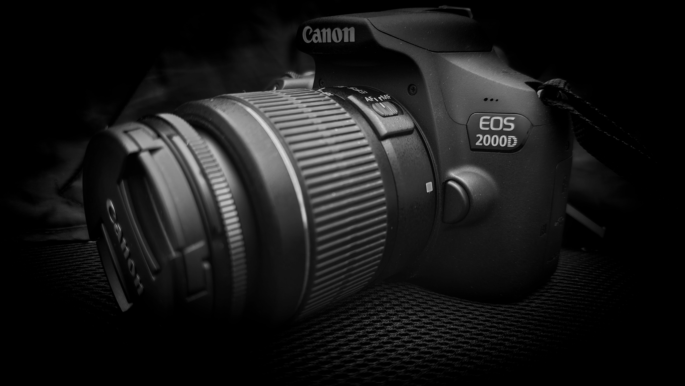

Cesta muže
Tady začíná moje nová cesta. Moment, kdy jsem si uvědomil, že bych toho chtěl od života víc, mě na tuhle cestu dovedl. A jdu po ní krok po kroku, den po dni dál a dál ...
Tohle není časopis ani magazín. Je to můj zápisník životní změny v digitální podobě.

Foťák se stal mým společníkem na toulkách novou životní cestou. Skrz čočku fotoaparátu je pohled na svět jiný. Detaily. Foťák je odhalí, zachytí a uchová. Je to připomenutí začátku cesty a jejího průběhu. Protože životní změna a cesta k ní je proces na celý život.